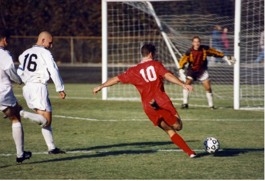

Football (also known as association football or soccer) is a team sport in which two teams of 11 players compete against each other. It is widely regarded as the most popular sport on the planet. It is a ball game played on a rectangular grass field, or sometimes artificial turf, with goals at each end of the field. The goal of the game is to score by kicking the ball into the opposing goal in general play, only goalkeepers may use their hands or arms to propel the ball. The team with the most goals at the end of the game wins.
Introduction
Nature of the game
Football is governed by a set of rules. The game is played with a single round ball (the football), and two teams of eleven players compete to get the ball into the opposing team's goal, scoring a goal. The team with the most goals at the end of the game wins; if both teams have the same number of goals, the game is a tie. The main rule is that players (except goalkeepers) are not allowed to intentionally touch the ball with their hands or arms during play (though they do use their hands during a throw-in restart). Although players typically move the ball with their feet, they may use any part of their bodies other than their hands or arms.
History of football
Games revolving around the kicking of a ball have been played in many countries throughout history. The first known examples of a team game involving a rock-made ball occurred over 3,000 years ago in ancient Mesoamerican cultures. Tchatali was created by the Aztecs, though different versions of the game were played across large areas. In some rituals, the ball represented the sun, and the captain of the losing team was sacrificed to the gods. A bouncing ball made of rubber was a unique feature of Mesoamerican ball game versions; no other early culture had access to rubber.
Players, Equipment and Officials
Each team can have a maximum of eleven players (excluding substitutes), with one of them serving as the goalkeeper. Competition rules may specify a minimum number of players required to form a team, which is typically seven. Goalkeepers are the only players permitted to play the ball with their hands or arms, but only within the penalty area in front of their own goal. A shirt, shorts, socks, footwear, and adequate shin guards are the minimum requirements for players. Players are not permitted to wear or use anything that could endanger themselves or another player (including jewellery or watches). The goalkeeper must wear clothing that distinguishes him from the other players and match officials.